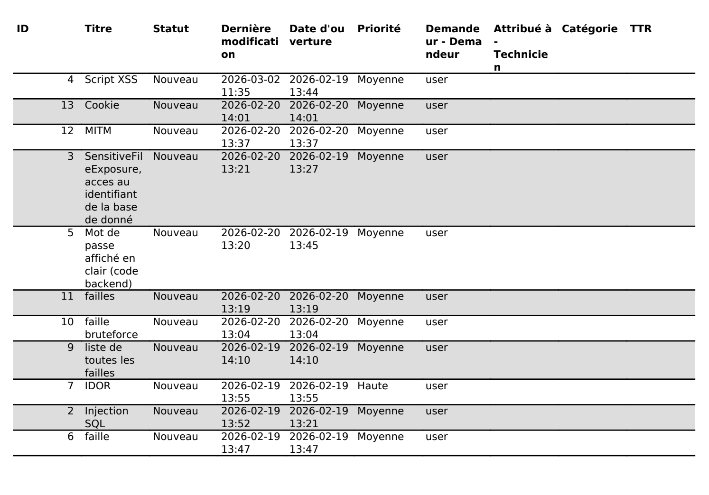

Collecte, suivi et orientation des demandes
Réalisation en formation - Hackathon BTS SIO
GLPI a été utilisé comme outil central de ticketing pour centraliser, suivre et orienter l'ensemble des demandes et incidents générés pendant le hackathon.
Collecte des demandes : lorsqu'un problème survenait (incident technique, demande d'assistance, blocage dans le développement), un ticket était créé directement dans l'interface GLPI.
Suivi et visibilité : une fois créé, le ticket était visible par l'ensemble des utilisateurs. Les membres pouvaient consulter les demandes en cours, ajouter des informations complémentaires ou proposer des solutions. Cette visibilité partagée évitait la perte d'information et facilitait la coordination entre les différents rôles du projet.
Orientation et priorisation : les tickets étaient classés selon des niveaux de priorité configurés (faible, moyen, élevé, très élevé, majeur), permettant de traiter en premier les incidents bloquants. En fonction de la nature du problème, les demandes étaient orientées vers le membre de l'équipe le plus compétent pour y répondre.
Clôture et traçabilité : chaque ticket était mis à jour au fil de son traitement, puis clôturé une fois le problème résolu. L'historique des tickets constituait une base de connaissance des incidents rencontrés et des solutions apportées, réutilisable pour des problèmes similaires.

Réalisation en milieu professionnelle
À compléter